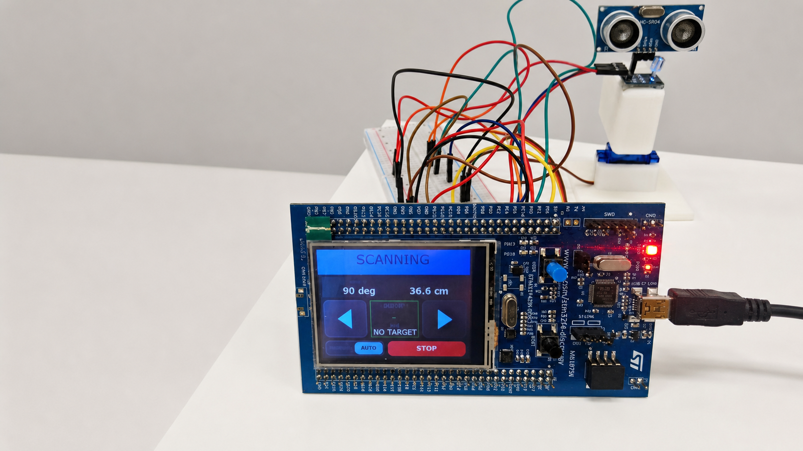
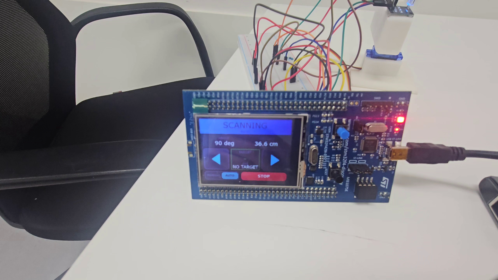
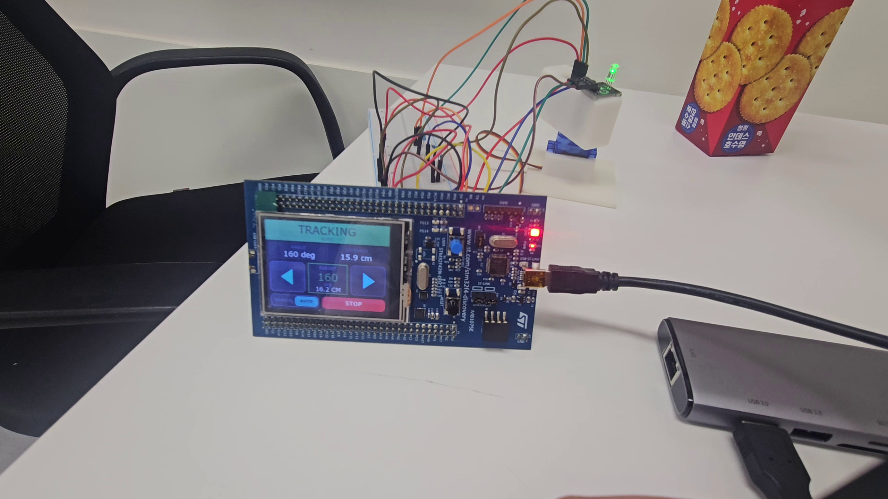
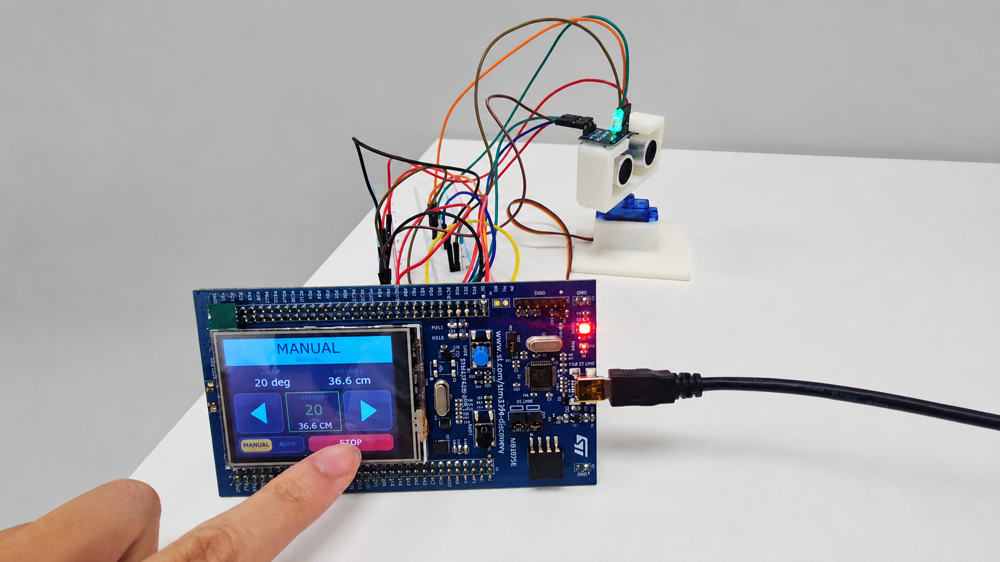

한 각도의 거리 변화만으로는 실제 물체와 단발 이상치 구분 곤란
EMBEDDED SOFTWARE · REAL-TIME SYSTEM
STM32 기반 초음파 표적탐지와 추적
HC-SR04 한 개를 서보모터로 왕복 구동해 각도별 거리 프레임을 만들고, 공간 연속성과 시간 재검증을 통과한 접근 물체만 표적으로 확정한 FreeRTOS 개인 프로젝트.
- 플랫폼
- STM32F429, HC-SR04, SG90
- 담당
- 개인 프로젝트, 전체 설계와 구현
- 기술
- C · FreeRTOS · HAL · TouchGFX
- 결과
- 탐지, 추적, 소실, 재탐색 자동 순환

01 / PURPOSE
구현 목표
단일 거리 측정값을 화면에 표시하는 데서 끝내지 않고, 제한된 센서와 MCU 자원으로 주변 탐색부터 표적 확정, 추적, 소실 판정, 재탐색까지 하나의 운용 사이클로 완성하는 것이 목표였다.
이동 중 측정 시 실제 각도와 거리 데이터의 시점 불일치
여러 기능이 GPIO와 타이머를 동시에 제어할 가능성
스캔, 추적, 소실 상태와 거리값의 실시간 표시 필요
02 / ARCHITECTURE
RTOS 구조
INPUTTouchGFXHC-SR04 Echo
CONTROLScanControllerTask상태전이와 전체 순서 관리
WORKERSServoTaskUltrasonicTaskTrackingTaskLedTask
OUTPUTPWM / GPIOGUI / UART
- 태스크Scan, Servo, Ultrasonic, Tracking, Led의 다섯 실행 주체 분리
- 메시지요청과 응답을 열 개 큐로 전달하고 sequence 번호로 매칭
- 제어권하드웨어별 전용 태스크만 GPIO, PWM, 입력 캡처 접근
- GUI 정책밀린 상태는 폐기하고 가장 최근 상태만 TouchGFX에 반영
03 / STATE MACHINE
탐지와 추적 흐름
04 / DEMO
통합 동작
05 / EVIDENCE
기능별 결과




06 / DESIGN DECISIONS
핵심 판단
이동 후 측정
SG90의 실제 위치 피드백 부재를 고려해 PWM 변경 뒤 100 ms 안정화 후 Echo 취득.
각도와 거리의 시점 정합프레임 비교
개별 거리 대신 같은 방향의 15포인트 프레임을 비교해 시간 변화 추출.
접근 물체와 정지 배경 분리공간과 시간 이중 조건
인접 각도 연속성 통과 뒤 후보 위치에서 다시 3회 측정.
단발 반사 노이즈 억제최신 상태 우선 큐
화면 갱신 큐가 가득 차면 오래된 상태를 버리고 현재값 반영.
실제 동작과 GUI 지연 차단설계상 한 프레임 약 1.7초, 추적 갱신 약 0.68초. 실제 계측값이 아니라 코드 상수와 타이밍 예산으로 계산한 값이며, 최대 병목은 센서가 아닌 서보 안정화 100 ms.
07 / RESULT
완성 범위
7
운용 상태 구현
SCANNING, CANDIDATE, DETECTED, TRACKING, LOST, STOPPED, MANUAL
- 센서 드라이버HC-SR04 입력 캡처와 거리 환산, SG90 PWM 제어
- 실시간 구조FreeRTOS 태스크와 큐, 타임아웃, sequence 응답 매칭
- 판단 로직왕복 프레임 비교, 접근 후보 검증, 표적 추적과 소실 판정
- 운용 화면TouchGFX AUTO, MANUAL, START, STOP 명령과 상태 표시
- 검증 근거동작 영상, 상태별 화면, UART 왕복 스캔 로그 확보